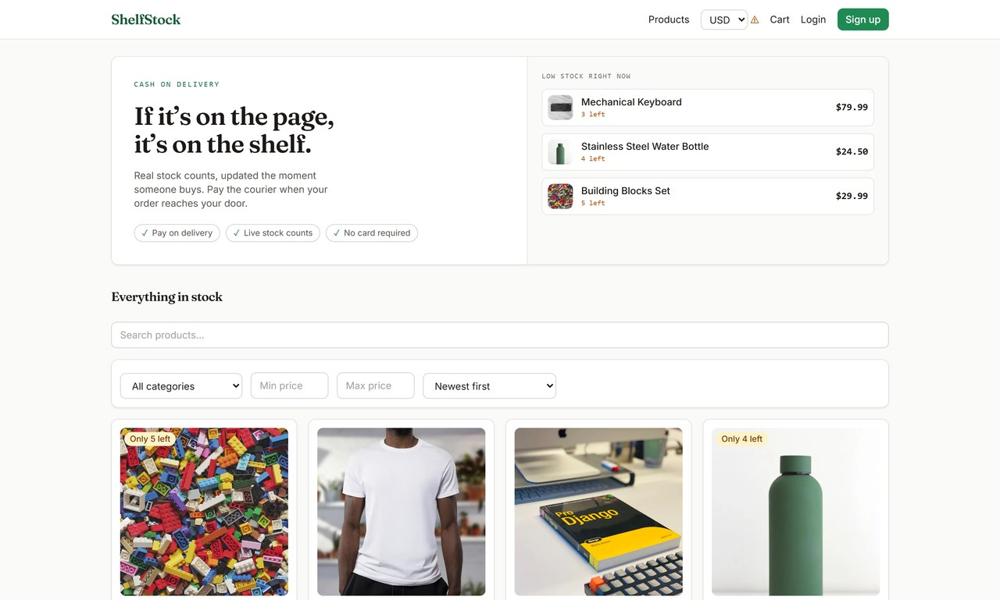
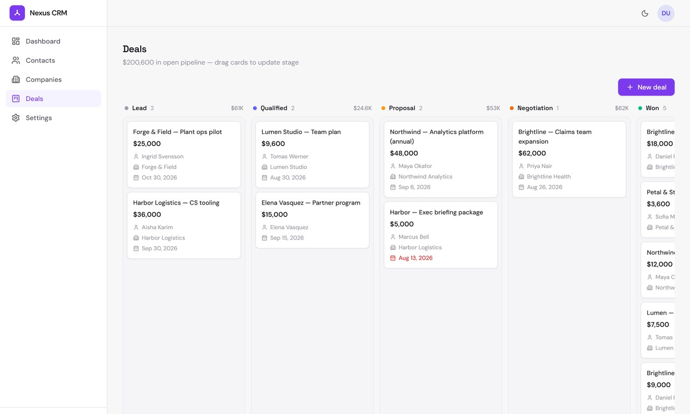
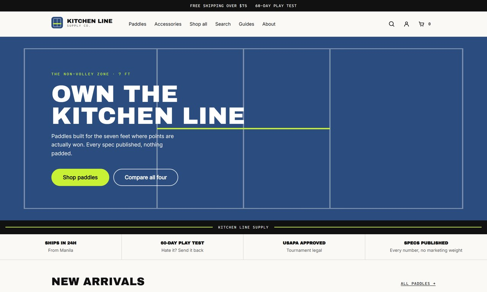

Desktop on the left, phone on the right. Changes from the first mockup: no grid or glow, no pulsing badge, one font family (IBM Plex), monospace only for real data, tiles sized by how much each project has behind it, and an OS-mode tile. Use the buttons to try two accent colours.
Desktop, 1440px wide (scaled)
Available now for contract work and full-time developer roles. Based in Cebu City.
Mostly Next.js, TypeScript and PostgreSQL. I like finding the bug that only shows up when two people click at the same moment, fixing it, and writing down why.

An online store whose checkout locks the stock row, so two buyers can't both take the last unit. Comes with an Android app for packing orders.

A CRM with AI lead scoring that still works with no API key, tested against prompt injection.

A Shopify theme written from an empty folder. Cart and filters work with JavaScript off.
Draggable windows, a terminal, Minesweeper and a camera app that takes a photo when you give it a thumbs-up. On a phone it opens as a home screen instead.
Open OS modePhone, 390px wide
Available now for contract work and full-time developer roles.
Mostly Next.js, TypeScript and PostgreSQL.
A store whose checkout can't oversell the last unit.
Home screen, apps, a terminal and games.
Open itEach shows the wordmark at full size, at navbar size, and as a browser-tab icon. They're flat type only, with no gradients or glow, so they still work at 16 pixels. The accent buttons above recolour these too.